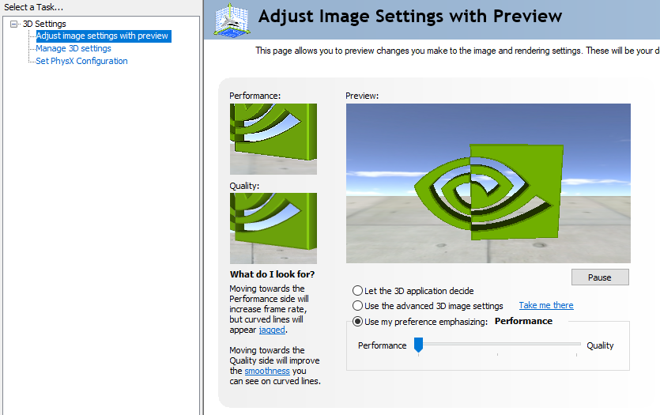
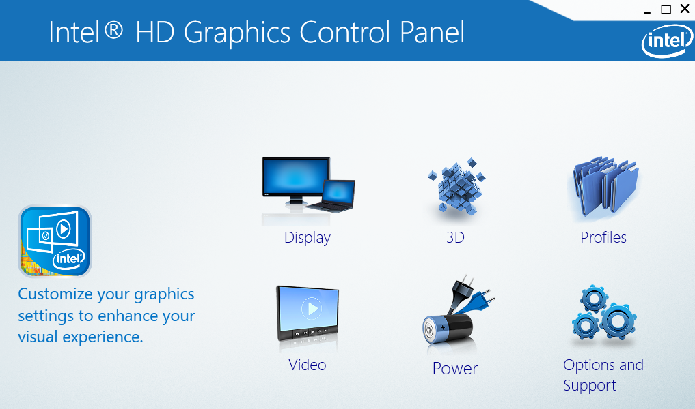
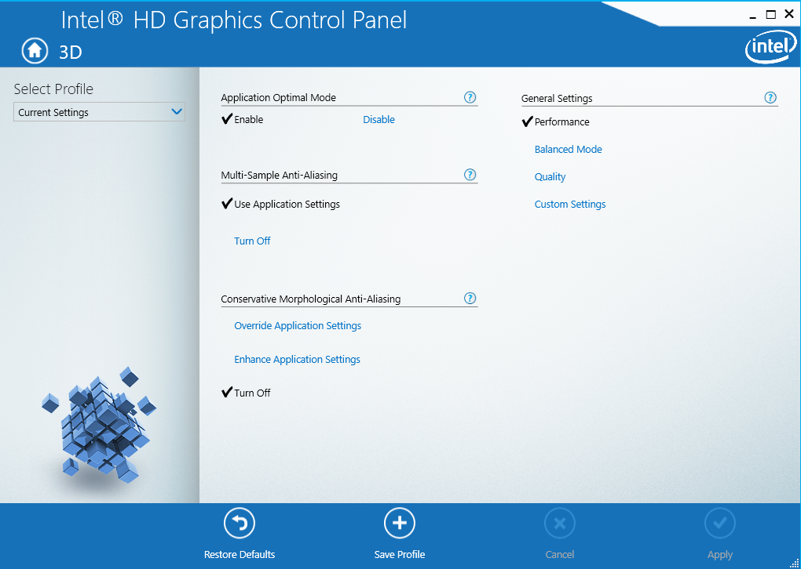

Optimizar con Nvidia
Para poder optimizar el rendimiento de los juegos teniendo Nvidia, se realizara un unico y sencillo paso.
Primero, se tiene que abrir la interfaz de Nvidia. Una vez abierto nos mostrara el apartado principal "Adjust image settings with preview".
Dentro tendremos diferentes opciones, ya sea para que se vea mejor visualmente o mejorar el rendimiento.
Para optimizar debemos seleccionar la opcion "use my preferences emphasizing" y luego mover a performance.
Una vez echo el paso, se podra mejorar los fps.
Optimizar con Intel
Para la optimizacion con Intel debemos de abrir la interfaz de Intel.
Power
Una vez dentro, seleccionaremos la opcion "Power" y veremos la siguiente ventana:

Dentro de visualiza dos opciones: Graphics Power Plan y Extended battery Life for Gaming.
Graphics Power Plan
Seleccionar la opcion Maximum performance, para obtener un mejor rendimiento pero tambien consumiendo mas bateria.
Extended battery Life for Gaming
Esta opcion lo habilitamos para que la bateria se extienda en su duracion
3D
En esta opcion se mostrara el siguiente apartado:
En este apartado en "General Setting" seleccionamos la opcion de Performance, con ello ayudando a mejorar el rendimiento en los juegos y ademas de ayudar a ganar unos cuantos fps.